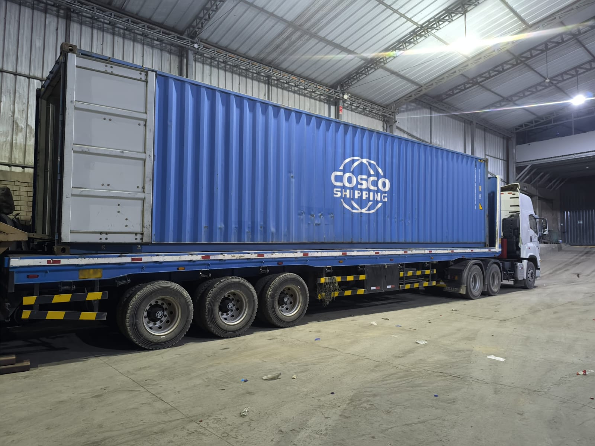

Galería del Proceso
Así se ve nuestra producción
Conoce de cerca cada etapa de nuestro proceso metalúrgico

1 / 3
Nuestra empresa se especializa en la compra de desperdicios metálicos y subproductos. Compramos con pago justo, rápido y transparente, garantizando un proceso profesional y confiable.
En ECOPET buscamos fortalecer alianzas tanto con proveedores confiables de materia prima como con clientes que valoran productos metalúrgicos refinados de alta calidad.
Todo nuestro proceso está diseñado para garantizar calidad, eficiencia y trazabilidad en cada etapa, ofreciendo a nuestros proveedores un servicio serio, seguro y de alto estándar.
Si deseas formar parte de nuestra cadena de suministro o explorar oportunidades comerciales, estamos disponibles para conversar.

Conoce de cerca cada etapa de nuestro proceso metalúrgico
Cada etapa está diseñada con rigor técnico para garantizar la máxima calidad del producto final
En la fase preoperativa, llevamos a cabo una negociación comercial internacional estratégica y detallada con nuestros proveedores. Buscamos las mejores condiciones de precio, plazos de entrega, calidad y términos de pago, siempre priorizando la confiabilidad y el cumplimiento de estándares internacionales.
Buscamos las mejores condiciones de precio, plazos de entrega, calidad y términos de pago, siempre priorizando la confiabilidad y el cumplimiento de estándares internacionales.
Este proceso nos permite optimizar costos, minimizar riesgos y garantizar la continuidad operativa desde el inicio.

Iniciamos con la solicitud de cotización a nuestros proveedores homologados, seguida de una rigurosa evaluación técnica para garantizar la calidad del material.
El transporte es un proceso tercerizado con empresas especializadas y confiables. Finalmente, en nuestras instalaciones realizamos la recepción, descarga y control de ingreso, verificando cantidad, calidad y condiciones del producto antes de su ingreso al stock.
De esta forma aseguramos un abastecimiento oportuno, trazable y con los más altos estándares de calidad.
En ECOPET ejecutamos un proceso productivo metalúrgico de alto rendimiento mediante fundición primaria por fusión térmica, con estrictos estándares de control de calidad y eficiencia.
Utilizamos tecnología avanzada y procedimientos optimizados que nos permiten alcanzar un excelente rendimiento metalúrgico, máxima pureza del material y una calidad final superior y consistente.
Reconocemos que la fundición genera una merma técnica inevitable; sin embargo, realizamos un monitoreo permanente y detallado del rendimiento para maximizar la eficiencia y reducir al mínimo las pérdidas.
De esta forma, aseguramos que el producto final cumpla de manera consistente con las especificaciones técnicas pactadas, entregando un material de alta pureza y excelente estabilidad.
Nuestro compromiso con el control preciso nos permite ofrecer resultados confiables y competitivos en cada lote producido.
EEn ECOPET convertimos el despacho y venta internacional en una experiencia confiable y sin complicaciones para nuestros clientes alrededor del mundo.
Gestionamos con precisión el embalaje especializado, la documentación aduanera completa y el transporte internacional, asegurando que cada envío llegue a tiempo, en óptimas condiciones y cumpliendo todos los requisitos exigidos en el destino.
Nuestra trayectoria y compromiso con la puntualidad y la seguridad nos han consolidado como un proveedor en el que puedes confiar plenamente para tus operaciones de importación de productos metalúrgicos.
Recepción, descarga y almacenaje de todos los materiales entrantes con verificación de calidad y cantidad.
Selección de plomo, combinación de viruta y antracita en las proporciones técnicas requeridas.
Obtención de tochos de plomo mediante fusión térmica con altos estándares de control y calidad.
Se coloca el plomo líquido en tocheras de plomo para su solidificación controlada y uniforme.
Se alinean los tochos para pasar a control de calidad y verificación de especificaciones técnicas.
Tochos aprobados listos para exportación, almacenados en condiciones óptimas hasta su despacho.
Se cargan los contenedores según orden de compra de clientes. Se colocan código de barras a los tochos y etiquetas para su identificación. Se genera factura de venta, según ticket de ingreso en almacén extraportuario.
En línea ahora


 carroca
carroca